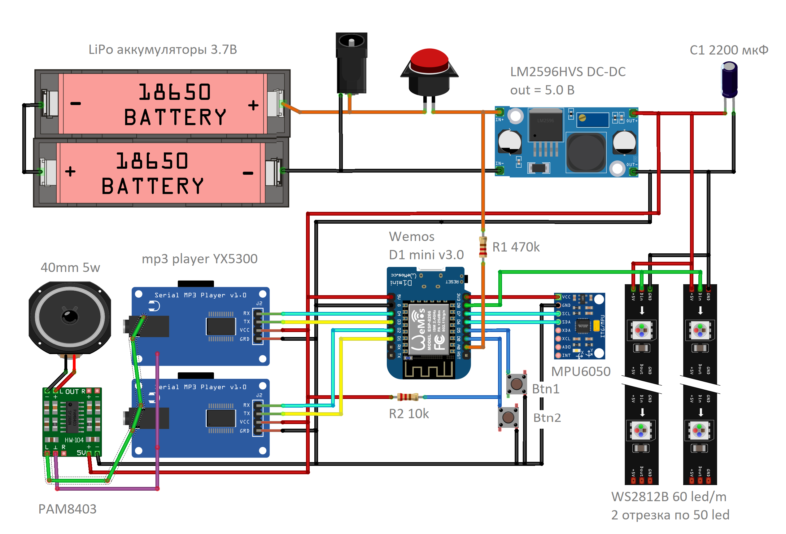

В проекте представлен световой меч джидая из кинофильма Звёздные войны с дополнительными режимами.
Меч светится разными цветами, мерцает, издает непрерывное гудение и звуки взмаха и удара. Вспыхивает при ударе. Воспроизводит произвольную фразу принажатии кнопки. При включении и выключении воспроизводит соответствующие звуки. Эти и другие звуки, цвета, громкость можно настроить в процессе работы кнопками.
Имеет также режимы автомата (стреляет одиночными выстрелами или очередью, когда "заканчиваются" патроны нужно "перезарядить" обойму), факела (горит различными цветами и звуками пламени, можно усилить пламя), полицейской мигалки (с разными вариантами мигания и разными звуками сирены), жезла ДПС, просто лампы. Прошивку можно обновить, не разбирая меч.
За основу был взят проект светового меча от Алекса Гайвера. Но код и железо сильно модифицированы, так что от исходного проекта мало что осталось.
Был выбран контроллер Wemos D1 mini v3.0. Это снимает ограничения на объем кода и позволяет реализовать много дополнительных режимов и разных вариантов поведения меча. Более мощный процессор позволяет добавить более интересные световые эффекты. Наличие Wi-Fi позволяет обновлять прошивку по воздуху (OTA), не разбирая сам меч. Кроме того, звуки воспроизводятся через два mp3 плеера YX5300. Один используется для фонового звука. Второй для разных звуковых эффектов. Это упрощает код и позволяет избавиться от переходных процессов при переключении звуков. В отличии от предыдущей версии, где использовался DFPlayer, эти плееры могут воспроизводить WAV файлы. Поэтому уменьшается задержка между ударом и звуком удара. И нет паузы и щелчков при циклическом воспроизведении, например фона.
Адресная лента используется WS2812B на 5 Вольт. Каждый LED управляется отдельно, в отличии от 12 В ленты, где LED-ы сгруппированы по 3. Это дает более плавную картинку, например в режиме ФАКЕЛ. А также позволяет использовать только два аккумулятора вместо трёх.
В данной схеме я использовал DC-DC понижающий преобразователь LM2596HVS. При желании, его можно убрать. Тогда надо оставить только один аккумулятор (или несколько, соединенных параллельно), поменять сопротивление 470кОм на 220кОм (делитель для измерения напряжения аккумулятора), исправить в коде этот номинал, а также поменять количество банок аккумулятора с 2 на 1. Но когда я пробовал такой вариант, при разрядке аккумулятора начинали искажаться громкие звуки.
Убрал отдельный светодиод на кнопке. Использовал вместо него первый светодиод ленты. Им можно моргать в разных случаях разным цветом. Сразу понятно, в каком режиме сейчас меч.
Пришлось добавить сопротивление R2 10кОм, которое подтягивает вход D0 на питание. В контроллере на этом пине нет внутреннего подтягивающего сопротивления.
Лента питается отдельным достаточно толстым проводом. Также добавил конденсатор большой емкости, чтобы убрать скачки по питанию, например при ударе, когда меч вспыхивает белым. Его использование необходимо, в отличии от 12 В ленты, где ток в 3 раза меньше.
В mp3 плеерах разъемы наушников выпаял, чтобы не занимали пространство. Левый и правый каналы обоих плееров соединил и подал на вход усилителя. Так можно делать, потому что на выходах у плееров уже есть RC цепочки.
В отличии от предыдущей версии, управление кнопками теперь более удобное и логичное.
1. Нажимаем кнопку питания. Лента плавно загорается красным на 2 сек, показывая процент зарядки аккумулятора. Включается дежурный режим. Первый светодиод моргает синим.
2. Во время включения питания нажата кнопка 1. Включается режим прошивки кода по wifi (OTA). Первый светодиод моргает оранжевым. Для корректной работы режима нужно подставить в коде WIFI_SSID и WIFI_PWD для входа в Вашу сеть WIFI. Для загрузки прошивки зайдите в браузере на http://IP_ADDRESS/update , где IP_ADDRESS - IP адрес контроллера в сети. Его можно найти в админке маршрутизатора. Компьютер должен быть в той же сети (подключен к тому же маршрутизатору).
3. Заряд аккумулятора меньше 10%. Ничего не работает, только первый светодиод моргает красным.
1. Длительное нажатие кнопок 1 + 2. Включение меча (переход в рабочий режим). Если заряд меньше 10%, то не включается. Если выбран режим МЕЧ, то плавно загорается и проигрывается звук включения. Если звук долгий, его можно прервать кнопкой 2 или ударом меча.
2. Нажатие кнопок 1 + 2 более 3 секунд. Настройка звука включения (только если выбран режим МЕЧ). Первый светодиод моргает зеленым. В этом режиме однократное нажатие кнопок 1/2 выбирает следующий/предыдущий звук включения. Выбранный звук проигрывается. Если не было нажатий 5 секунд, переходит в рабочий режим, выбранный звук запоминается.
3. Клик кнопки 1 или 2. Неправильная попытка включить меч. Воспроизводится шуточное сообщение.
4. Удар или взмах в дежурном режиме. Неправильное использование меча. Шуточное сообщение.
5. В дежурном режиме через 10 минут. Воспроизводится напоминание, что нужно выключить питание. Дальше напоминание повторяется каждую минуту.
1. Длительное нажатие кнопок 1 + 2. Выключение меча, переход в дежурный режим. Если выбран режим МЕЧ, то лента плавно гасится и проигрывается звук выключения. Первый светодиод моргает синим.
2. Нажатие кнопок 1 + 2 более 3 секунд. Настройка звука выключения (только если выбран режим МЕЧ). Первый светодиод моргает зеленым. В этом режиме однократное нажатие кнопок 1/2 выбирает следующий/предыдущий звук выключения. Выбранный звук проигрывается. Если не было нажатий 5 секунд, переходит в дежурный режим, выбранный звук запоминается.
3. Клик кнопки 1. В режиме МЕЧ, ЛАМПА переключает цвет по кругу (Красный - Оранжевый - Жёлтый - Зелёный - Голубой - Синий - Фиолетовый - Белый). В режиме АВТОМАТ переключает цвет выстрела. В режиме ФАКЕЛ меняет палитру огня. В режиме МИГАЛКА переключает вариант мигания.
4. Двойной клик кнопки 1. В режиме МЕЧ, ФАКЕЛ переключает фоновый звук. В режиме АВТОМАТ переключает звук выстрела. В режиме МИГАЛКА переключает звук сирены.
5. Тройной клик кнопки 1. Переход на следующий режим по кругу: МЕЧ - АВТОМАТ - ФАКЕЛ - МИГАЛКА - ЖЕЗЛ - ЛАМПА
6. Клик кнопки 2. В режиме МЕЧ воспроизводит произвольную фразу из набора 1. В режиме АВТОМАТ воспроизводит выстрел. Траектория пули подсвечивается. Отрисовываеется пламя из дула. Если кончились патроны, воспроизводит щелчок. В режиме МИГАЛКА воспроизводит звук полицейской машины "Кря".
7. Двойной клик кнопки 2. В режиме МЕЧ воспроизводит произвольную фразу из набора 2. В режиме АВТОМАТ перезаряжает обойму автомата. В режиме МИГАЛКА воспроизводит звук полицейской машины "Кря - кря".
8. Длительное нажатие кнопки 2. В режиме АВТОМАТ - стрельба очередью. В режиме ФАКЕЛ - усиление пламени. В режиме МИГАЛКА - звук полицейской сирены.
9. Клик кнопки 1 при нажатой кнопке 2 / Клик кнопки 2 при нажатой кнопке 1. Громче / тише (кроме режимов ЛАМПА, ЖЕЗЛ). Длина зеленой полосы показывает уровень громкости.
10. Удар в режиме МЕЧ. Звук удара из набора 1. Вспышка.
11. Удар с нажатой кнопкой 1 в режиме МЕЧ. Звук удара из набора 2. Вспышка.
12. Удар с нажатой кнопкой 2 в режиме МЕЧ. Звук удара из набора 3. Вспышка.
13. Взмах в режиме МЕЧ. Звук взмаха.
14. Резкий взмах в режиме МЕЧ. Звук резкого взмаха.
15. Если пользователь ничего не нажимает (не машет, не ударяет) 10 минут. Переходит в дежурный режим.
16. Если аккумулятор разряжается в процессе работы. Проигрывается звук умирающего меча. Всё выключается. Первый светодиод моргает красным.
Выбранные настройки (режим работы меча, цвет меча, палитра огня, цвет выстрела, цвет лампы, вариант полицейской мигалки, громкость, звук включения, звук выключения, звук фона меча, звук фона факела, звук выстрела, звук сирены) сохраняются в энергонезависимой памяти и восстанавливаются при следующем включении.

Исходный проект меча от Алекса Гайвера.
Версия Алекса Гайвера
Моя предыдущая версия меча.
Версия 2.0
Исходный проект мигалки. Код полностью переработан.
fastled-police-strobo
Звуки брал на различных сайтах, например:
https://freesound.org/
https://audionerd.ru/
А здесь можно сгенерировать озвучку произвольного текста:
https://cloud.yandex.ru/services/speechkit
Для конвертации в WAV формат использовал утилиту
FFMPEG
Для редактирования (перевод в моно, нормализация громкости, обрезание лишних фрагментов и пауз) аудио-редактор
Audacity
Схему рисовал в редакторе схем
Fritzing
Кастомные компоненты для Fritzing рисовал в SVG редакторе
Inkscape
Понижающий DC-DC преобразователь LM2596HVS
Усилитель мощности PAM8403 или на 5Вт
Светодиодная адресная лента WS2811 нужна белая, без защиты (IP30), 60 led/m
Кнопка питания нужен вариант с защелкой
Белая труба для лезвия самовывоз из Москвы. Нужна труба 32мм с внутренней крышкой
Рукоятка сделана из сантехнической трубы диаметром 40мм длиной 250 мм. В верхний конец вставлен раструб от сантехнической трубы диаметром 32мм, в который вставляется белая труба (лезвие меча). В нижний конец (то есть в раструб) вставлен отрезок такой же трубы (40 мм), чтобы утопить кнопку питания и разъем зарядки.
Динамик лежит на уплотнительной резинке трубы. Поверх него положил защитную сетку - обрезанная до 40 мм сетка для раковины из нержавейки. Край закрепил силиконом.